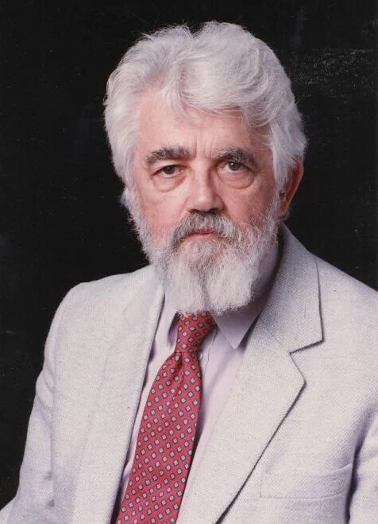

JOHN MCCARTHY
FATHER OF ARTIFICIAL INTELLIGENCE
(1927-2011)

ABOUT
- Renowned American computer scientist known for significant contributions to AI.
- John McCarthy was born on September 4, 1927, in Boston, Massachusetts.
- His early academic achievements were notable.
- Best known for developing Lisp, an early high-level programming language for AI.
- After completing his undergraduate studies in mathematics at the California Institute of Technology (Caltech), he pursued his Ph.D. in mathematics at Princeton University, where he conducted research in game theory.
- Contributions to time-sharing systems, formal logic, and AI concepts.
- In 1956, McCarthy organized the Dartmouth Workshop, a seminal event in the history of artificial intelligence.
- This workshop marked the beginning of AI as a distinct field of study and brought together leading researchers to explore the possibilities of machine intelligence.
- McCarthy's work in symbolic artificial intelligence, which involved manipulating symbols to represent knowledge and perform reasoning, laid the foundation for expert systems.
- These expert systems became widely used in fields such as medicine, finance, and engineering for decision-making tasks.
- McCarthy made significant contributions to formal logic, including the development of the predicate calculus and automated theorem proving.
- John McCarthy passed away on October 24, 2011.
LEGACY
- Pioneer in AI and programming languages.
- His work paved the way for AI research and symbolic computation.
- Profound impact on technology development.
- Continues to inspire researchers in the field.
- Received the Turing Award in 1971, the highest honor in computer science.
- His visionary ideas laid the foundation for the development of AI and symbolic computation.
- Contributions continue to shape the technology landscape.